实验导引1
词法分析的核心任务是从左到右读入源程序的字符流,识别出一个个的单词。所识别的 每一个单词,是下一个有意义的词法元素,如标识符或整数。
常见的可用 于词法规则描述的工具如:状态转换图,扩展巴克斯范式(EBNF),有限状态自动机,正规表达式等。
一般的自顶向下分析过程是:从 文法开始符号进行推导,每一步推导都获得文法的一个句型,直到产生一个句子,恰好是所 期望的单词符号串。每一步推导是对当前句型中剩余的某个非终结符进行展开,即使用以该 非终结符为左部的某个产生式的右部替换该非终结符。如果不存在这样的推导,则表明该单 词符号串存在语法错误。
避免回溯。可以规定在自顶向下分析过程只使用最左推导。
为了解决消除第二类非确定性的问题,通常采取的策略是向前查看确定数目的单词符 号,然后确定应该选择哪一个产生式进行最左推导。这种方法称为自顶向下预测分析。成功 分析的结果是一个唯一的最左推导。
LL(1) 中的第一个 “L” 代表从左(Left)向右扫描单词符号,第二个 “L” 代表产生的是最左(Leftmost)推导,“1” 代表向前查看(lookahead)一个单词符号。
文法 G 是 LL(1) 的,当且仅当对于 G 中任何两个有相同左部的不同产生式 A->a, A->b 都满足：PS(A->a) intersect PS(A->b) = empty。
First集合定义：
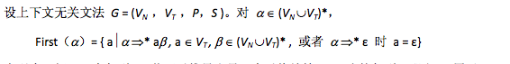
First集合算法：
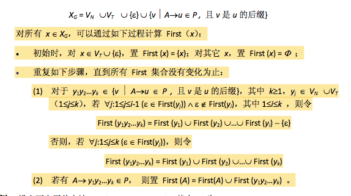
Follow集合定义：
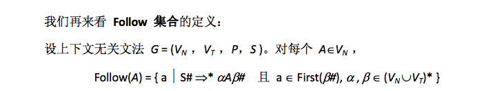
Follow集合算法：
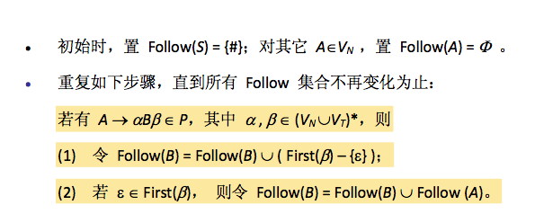
预测集合PS的定义与算法
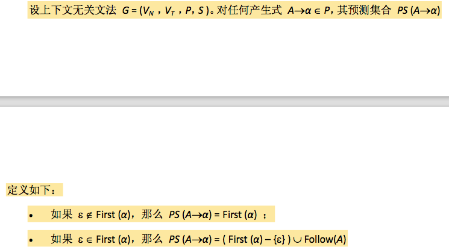
LL(1)文法的实现
在递归下降 LL(1)分析程序的设计中,每个非终结符都对应一个分析子程序,分析程 序从调用文法开始符号所对应的分析子程序开始执行。非终结符对应的分析子程序根据下一 个单词符号可确定自顶向下分析过程中应该使用的产生式,根据所选定的产生式,分析子程 序的行为依据产生式右端依次出现的符号来设计：
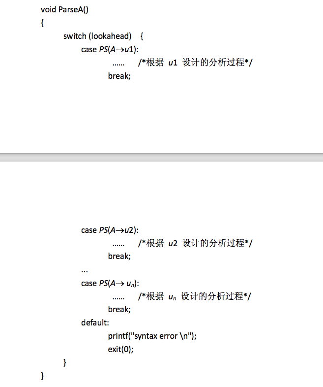
表驱动 LL(1)分析程序
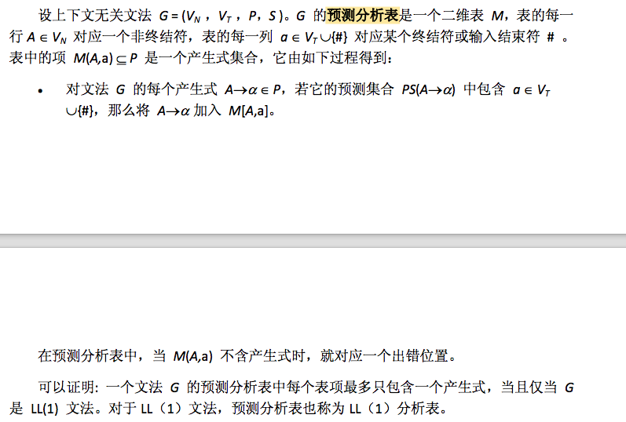
算法流程：
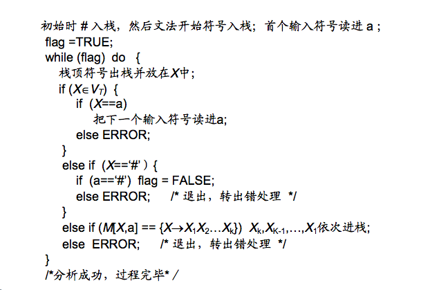
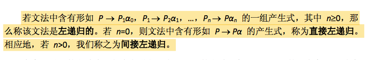
包含左递归和左公因子的文法一般不是 LL(1) 的。所以如果想要获得 LL(1) 文法,多数情况下需要消除文法中的左递归和左公 因子。
直接左递归
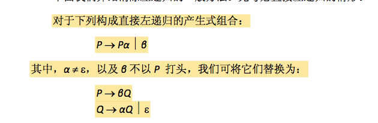
对于无回路、无e-产生式的文法消除一般左递归（重要例子：Notes4 (P15)）
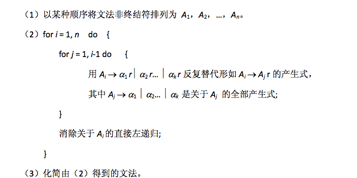
在实际设计中,一个含有左公因子的文法通常不是 LL(1) 的。算法如下：
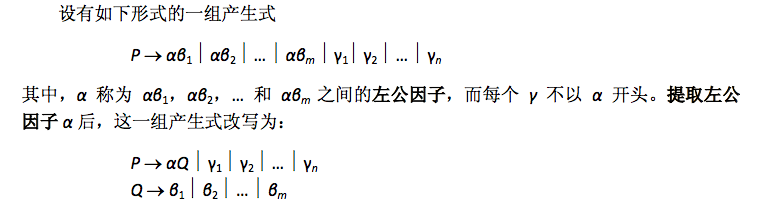
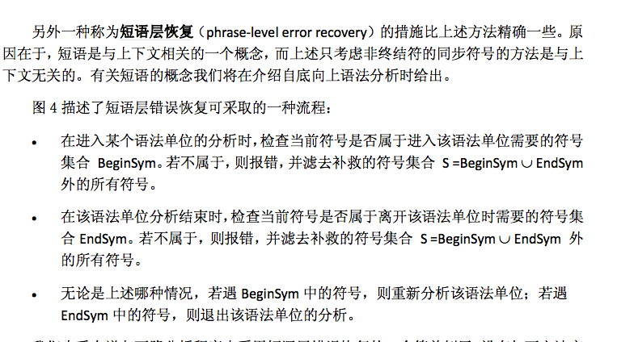
定义
对于给定语言的文法和一个单词符号串(终结符串),一般的自底向上分析过程是: 从 所要分析的终结符串开始进行归约,每一步归约是在当前串中找到与某个产生式的右部相匹 配的子串,然后将该子串用这一产生式的左部非终结符进行替换;如果找不到这样的子串, 则回退到上一步归约前的状态,选择不同的子串或不同的产生式重试;重复这一过程,直到 归约至文法开始符号;如果不存在任何一个这样的归约,则表明该单词符号串存在语法错误。
短语（从开始符号开始）
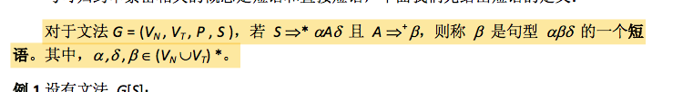
直接短语
只能一步规约。
句柄（例子：Notes5(P4)）
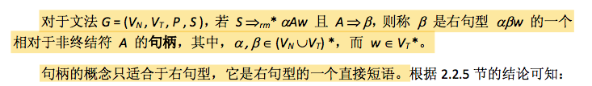
我们也可以分析树中找到句柄:先找出所有的直接短语,最左边的直接短语就是句柄。
实现自底向上分析最常用的技术是移进-归约分析。它的基本思想是借助一个栈(称为 分析栈或下推栈)和一个基于有限状态控制的分析引擎,分析引擎根据当前状态、分析栈当 前内容、余留的输入符号串来唯一确定如下动作之一,然后进入新状态:
若是替换一般的短语,则可能会使用多个产生式进行多步归约;若是替换直接 短语或句柄,则只使用一个产生式进行一步归约。在本书重点讨论的 LR 分析方法中,是对 句柄进行归约,Reduce 动作是将位于当前栈顶部分的句柄替换为该句柄相应的非终结符。
移进-归约分析过程 确定化的关键是解决好两类冲突:移进归约冲突和归约归约冲突。
过程
为简化状态控制,在实现移进-归约分析时通常会借助于一张分析表,称之为表驱动的 方法。图 3 描述了一种表驱动移进-归约分析模型。图中,Input# 表示余留的输入符号串, # 为串结束符;Output 表示可能的分析结果,如分析树。分析引擎根据当前状态,分析栈 当前内容、余留的输入符号串,通过查询分析表,来确定下一步动作。下一步动作若是 Shift, 则从余留的输入符号串中移入一个单词符号至分析栈;若是 Reduce,则按照分析表中记录 的归约方案进行归约,归约过程通常会访问记录了所有产生式的表。动作完成后,分析引擎 进入下一个状态,重复以上工作。
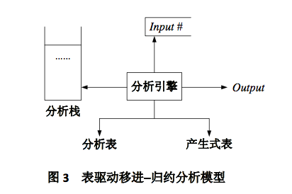
LR 中的 “L” 代表从左(Left)向右扫描单词符号,“R” 代表产生的是最右(Rightmost) 推导。LR 分析是一种确定的自底向上分析方法。最右推导的逆过程对应于自底 向上的每一步对句柄进行归约。
包括 LR(0)、SLR(1)、 LR(1) 和 LALR(1) 等分析方法。这些分析方法的名称中,“0” 代表向前查看 0 个符号,“1” 代表向前查看 1 个符号, SLR(1)代表 Simple LR(1),LALR(1) 代表 Look Ahead LR(1)。
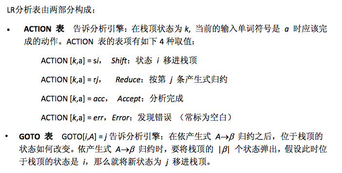
算法流程
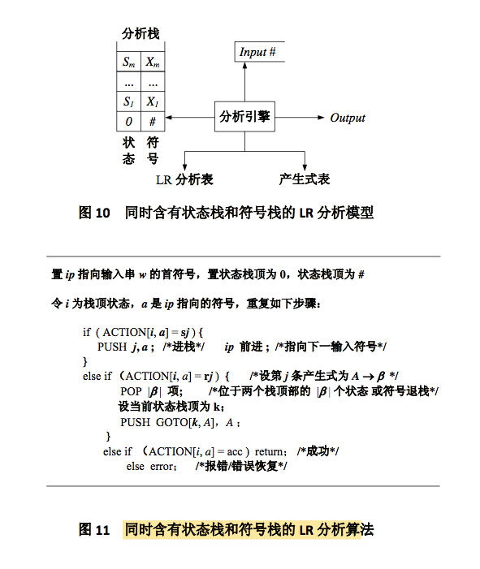
增广文法(开始符号不会出现在任何产生式的右部)
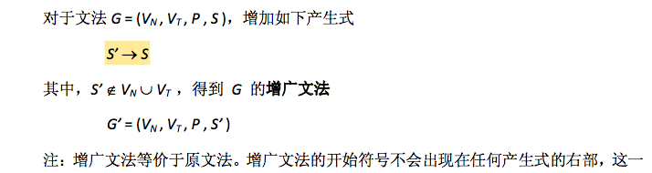
LR(0)项目
在右端某一位置有圆点的产生式。圆点标志着已分析过的串与该产生式匹配的位置。根据圆点所在的位置和圆点后是终 结符还是非终结符或为空,把项目分为以下几种:
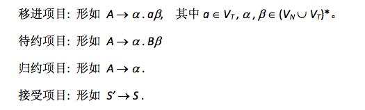
状态机的状态（例子：Notes5(P16)）
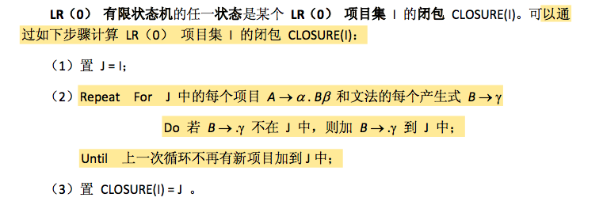
GO函数
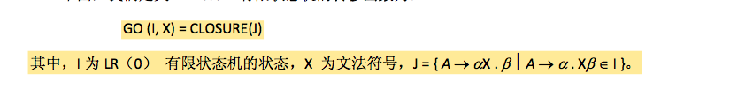
分析表
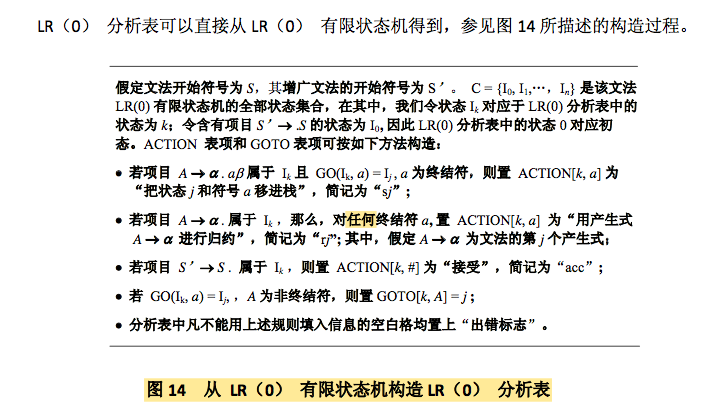
值得注意的是,LR(0) 分析表中,代表“按某个产生式进行归约”的表项一定是整行 出现的,意味着在 LR(0) 分析过程中遇到这一行对应的状态时,不向前查看任何输入符 号就可进行归约。
一个文法的 LR(0) 分析表中的一些表项有可能会被多重定义,即被不止一个 rj 或 sj 赋值。这种情 况下,是不合适进行LR 分析过程的。如果各表项均无多重定义,则称它为相应文法 G 的一张 LR(0)表,并称 G 为一个 LR(0)文法。
文法 G 是 LR(0) 文法,当且仅当它 的 LR(0) 有限状态机中的每个状态都满足:
通常,通过向前查看一个输入符号,可以根据这一符号是否属于要归约的非终结符的 Follow 集来决定是否进行归约。如果通过这种做法可以使 LR(0) 有限状态机中所有状态 中的冲突问题得到解决,那么我们就可以进行正常的 LR 分析。我们称这种方法为 SLR(1) 分析方法,它的基本原理是检查 LR(0) 有限状态机的所有状态是否有冲突,并借助于以 下两个方面来解决冲突问题:
分析表
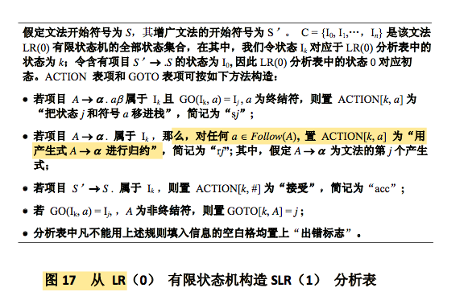
在按照图 17 中的算法构造分析表时,如果各表项均无多重定义,则称它为相应文法 G 的一张 SLR(1) 表,并称 G 为一个 SLR(1) 文法。
文法 G 是 SLR (1) 文法,当且仅当它 的 LR(0) 有限状态机中的每个状态都满足:
SLR(1) 分析和 LR(0)分析的主要差别就是在归约一个句柄时,前者要向前查看一 个输入符号,看是否是要归约的非终结符的 Follow 符号,若是则完成归约,否则进行出错 处理。
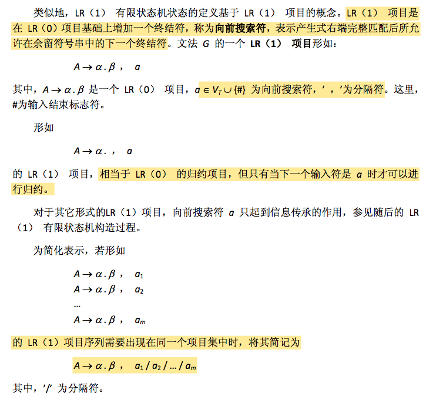
状态闭包的生成：
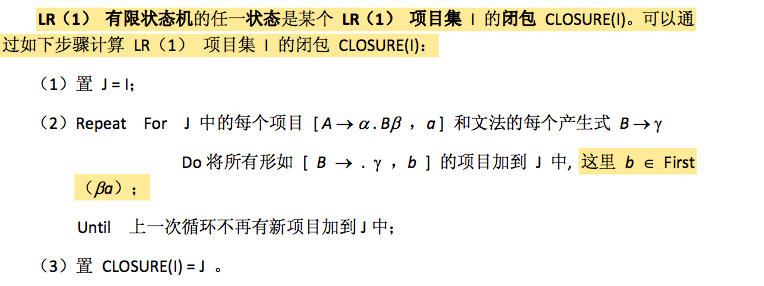
LR(1)分析表：
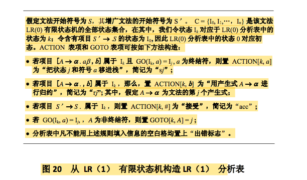
文法 G 是 LR(1) 文法,当且仅当它 的 LR(1) 有限状态机中的每个状态都满足:
由结果表明:在所有以确定方式工作的分析程序中,LR(1) 分析程序已经达到了 最强的分析能力。LALR(1) 分析方法得到与 LR(0) 有限状态机相同数目的状态,但保留了 LR(1) 方法的部分向前搜 索能力。
同芯状态
LR(1)项目 [A->α.β., a] 中的 A->α.β 部分称为该项目的芯。对于LR(1)有限 状态机的两个状态,如果只考虑每个项目的芯时它们是完全相同的项目集合,那么这两个状 态就是同芯状态。
合并同芯状态是将相互之间是同芯的状态合并为同一个状态,即将所有这些状态的项目 集合全部并起来。
对于 LR(1) 有限状态机的两个同芯状态,由 GO 函数得到的针对任何符号的后继状 态仍然是同芯的(？？？？？？)。据此,我们很容易改造原有的GO 函数使其 适应新的状态集合。这样,所有合并后的新状态和未合并的状态,以及改造后的GO 函数一起构成了一个新的LR(1) 有限状态机,称之为 LALR(1) 有限状态机。
在实际实现时,是不会先构造 LR(1) 有限状态机,然后再通过合并状态来构造相应 的 LALR(1) 有限状态机,而是会采取更有效的方法。如“on-the-fly”方法(或逐步合并法): LALR(1)FSM的状态和 GO 函数的构造过程同LR(1)FSM,但每产生一个新状态后,需判 断其是否与已有状态“同芯”;若是,就并到“同芯”的状态(合并向前搜索符),否则才加入 此状态。
与自顶向下分析过程的错误处理相比,自底向上分析处理语法错误更准确。原因在于推 导和归约过程有如下差别:推导时仅观察可推导出的输入串的一部分,而归约时可归约的输 入串整体已全部出现,并且输入符号是在查看后才被移进的。
符号的常见属性：
针对符号表的操作通常包含:
拥有共同有效范围的符号所在的程序单元就构成了一个作用域(scope)。相 对于程序的某一特殊点而言,该点所在的作用域称为当前作用域。当前作用域与包含它的程 序单元所构成的作用域称为开作用域(open scopes)。不属于开作用域的作用域称为闭作用 域(close scopes)。可见性(visibility)是指在程序的某一特定点,哪些符号是可访问的(即 可见的)。程序语言中常用的可见性规则(visibility rules)为:
新的声明只能出现在当前作用域。
多数情况下,每个作用域都有各自的符号表,我们称之为多符号表组织。但我们也可以 使所有嵌套的作用域共用一个全局符号表,称之为单符号表组织。
单符号表组织（在图 1 的符号表中插入一个符号对应的表项时,我们假定是插入到各分表的表头位置。 这样,当某个符号在符号表中出现多个副本时,那么离该符号的某个引用最近声明的副本应 作为该引用的解释,它应该处于分表中最靠前的位置。）：
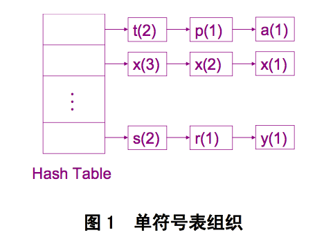
图 2 是单符号表组织的另一个例子,这次我们不采用 Hash 表结构,而采用线性表结构。 同时,我们展示了这一全局符号表中表项属性的设计,以接近实际的应用。
图 2 中,符号表项的 KIND 域标识符号的种类(变量符号 VARIABLE,常量符号 CONSTANT,过程符号PROCEDURE);VAL/LEVEL 域对于常量符号来讲标识是具体的数 值,对变量或过程符号来讲是指声明这些符号时的层号(如果最外层声明的层号为 LEV, 那么过程 r 内部声明的层号就为 LEV+1,过程 t 内部声明的层号就为 LEV+2);ADDR 域 仅对变量符号有效,DX+n中的n表示该变量在分配存储时相对于该过程存储区基址的偏移 量(我们不考虑变量的类型,并假设每个变量占一个单元的存储;若当前过程基址为 DX, 则该变量的存储地址将是 DX+n);SIZE 域仅对过程符号有效,标识该过程在被调用(激活) 时,应该申请的初始化空间的大小(CX 表示过程活动记录中控制单元的数目,因此 SIZE 的取值是该过程所声明局部变量的数目加上 CX)。
当处理到图 2 右边的程序位置 /here/ 时,某个符号是可见的,当且仅当它对应的表 项出现在符号表中(这是一个全局符号表)。实际上,所有嵌套的作用域共享着这张符号表 (嵌套层次即为层号 LEVEL)。图 2 所表示的符号表状态实际上刻画了当前的开作用域有两 个,一个作用域对应的层号为 LEV,另一个作用域对应的层号为 LEV+1。
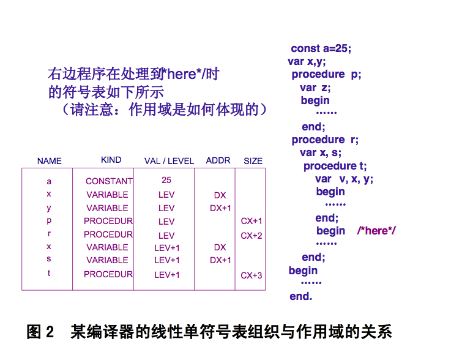
特点：
在编译程序的实现中,一种经典的方法是由语法分析程序的分析过程来主导语义分析以 及翻译的过程,课程将其称为语法制导的语义计算。
我们在文法 G[S] 基础上,为文法符号关联有特定意义的属性,并为产生式关联相应的 语义动作或条件谓词,称之为属性文法,并称文法 G[S] 是这一属性文法的基础文法。
对关联于产生式 A->α的语义动作 b := f(c1, c2,..., ck),如果 b 是 A 的某个属性, 则 称 b 是 A 的一个综合属性。从分析树的角度来看,由于计算综合属性是对父结点的属性 赋值,所以是“自底向上”传递信息
对关联于产生式A->α的语义动作 b := f(c1, c2,..., ck),如果 b 是产生式右部某个文法 符号 X 的某个属性,则称 b 是文法符号 X 的一个继承属性。从分析树的角度来看,由于 计算继承属性是对子结点的属性赋值,所以是“自顶向下”传递信息。
只包含综合属性的属性文法称为 S-属性文法。
由于综合属性是自底向上传递信息,因而基于 S-属性文法的语义计算通常采用自底向 上的方式进行。
若 S-属性文法的基础文法可以采用 LR 分析技术进行语法分析,那么我们可以通过扩充 分析栈中的域,形成语义栈来存放综合属性的当前取值,使得分析引擎在每一步归约发生之 前的时刻启动并完成产生式左部文法符号综合属性值的计算。
一个属性文法称为 L-属性文法,如果对其中每一个产生式 A -> X1 X2... Xn,其每个语义 动作所涉及的属性或者是综合属性,或者是某个 Xi(1≤i≤n)的继承属性,而这个继承属性 只能依赖于:
翻译模式在形式上类似于属性文法,但允许由{}括起来的语义动作出现在产生式 右端的任何位置,以此显式地表达属性计算的次序：
基于 S-翻译模式的语义计算一般基于自底向上分析过程,通过增加存放属性值 域的语义栈来实现。
我们假设语义栈由向量 v 表示,归约前栈顶位置为 top,栈上第 i 个位置所对应符号 的综合属性值 x 用 v[i]. x 表示。
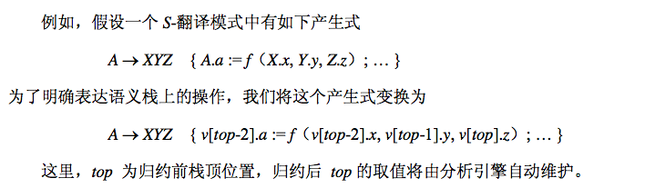
我们假定所讨论的 L-翻译模式的基础文法是 LL(1) 文法。
假设已 为非终结符 A 构造了一个分析子函数。现在,只需对这个分析子函数的定义作如下约定: 以 A 的每个继承属性为形参,以 A 的综合属性为返回值(若有多个综合属性,可返回记 录类型的值)。
改造后子函数代码的流程也是根据当前的输入符号来决定调用哪个产生式,与每个产生式对应的代码同样也是根据该产生式右端的结构来构 造(不同之处是要将语义动作嵌入其中),具体可描述为:
L-翻译模式中既有继承属性也有综合属性。综合属性是自底向上传递信息,因而在自底 向上的语义计算中,可以将文法符号的综合属性值存放于语义栈中。
一种处理嵌入在产生式中间的语义动作的方法是:引入新的非 终结符 N 和产生式 N->ε;把嵌入在产生式中间的语义动作集用非终结符 N 代替,并把该 语义动作集放在产生式 N->ε 后面。由于语义动作集中未关联任何继承属性,所以翻译模式 经过这样的变换后实际上就可以看作 S-属性文法(翻译模式)来处理了。
由于在自底向上的语义计算中,语义栈中只可能存放综合属 性值,所以在设计语义计算程序时应注意的一个原则是:继承属性的求值结果必须要以某个 综合属性值存放于语义栈中,而继承属性的访问也要最终落实到对某个综合属性值的访问。
通过变换翻译模式(如增加新的文法符号,增加相应的复写规 则和产生式),使嵌在产生式中间的语义动作集中仅含复写规则,并使得在自底向上的语法 分析过程中,文法符号的所有继承属性均可以通过归约前已出现在分析栈中的综合属性唯一 确定地进行访问。
看notes里的代码。
在 TAC 层次,变量名字 所对应的存储位置信息(相对基地址的偏移量)总是可以从符号表中得到。换句话说,变量 的取值即为其名字对应的存储位置上存储单元的内容。
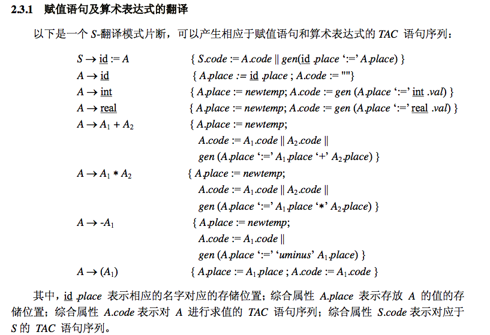
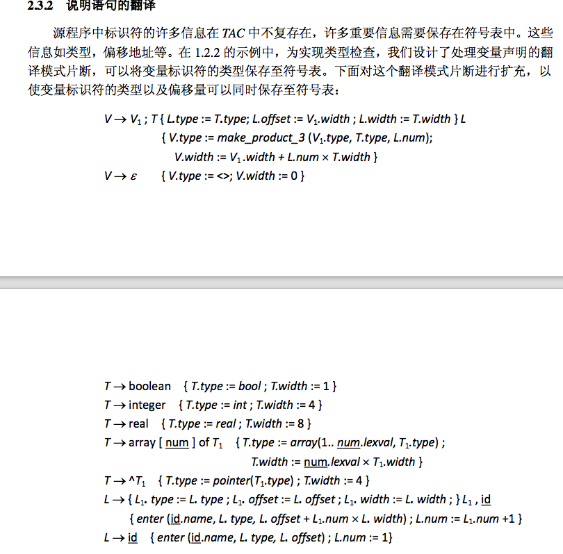
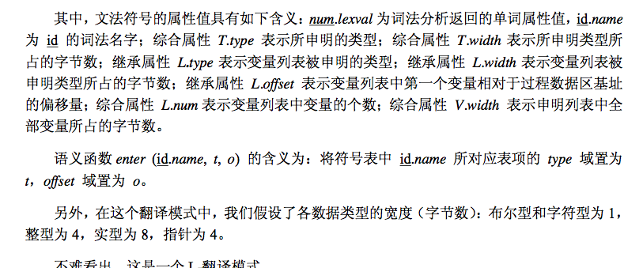
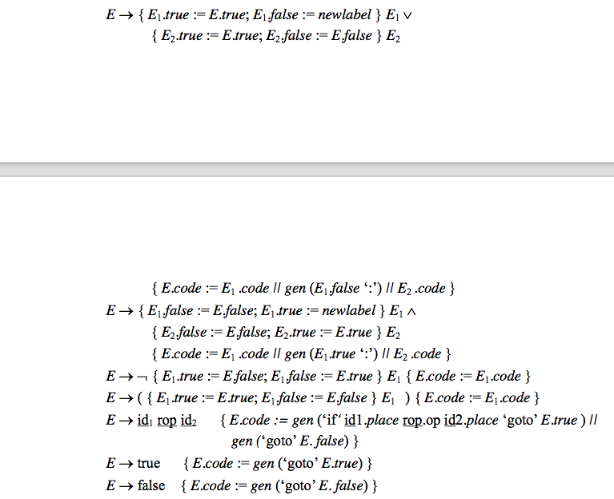
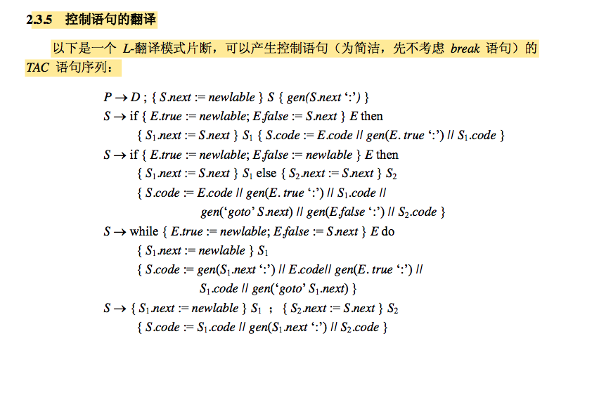
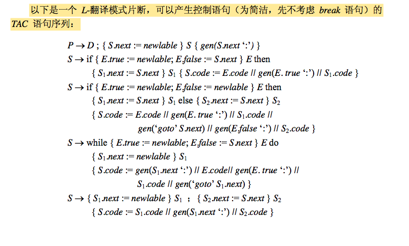
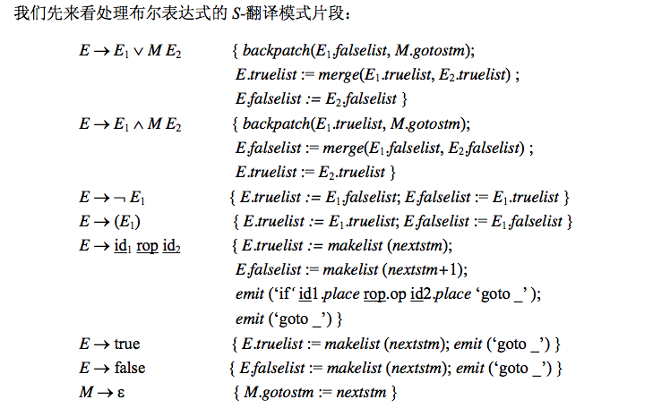
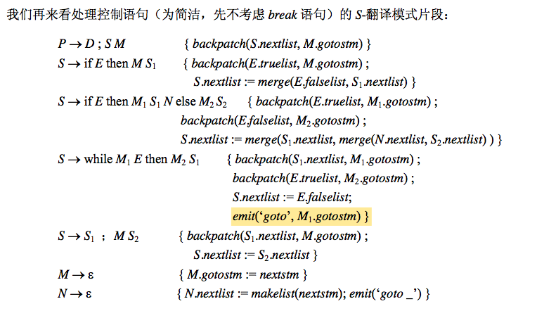
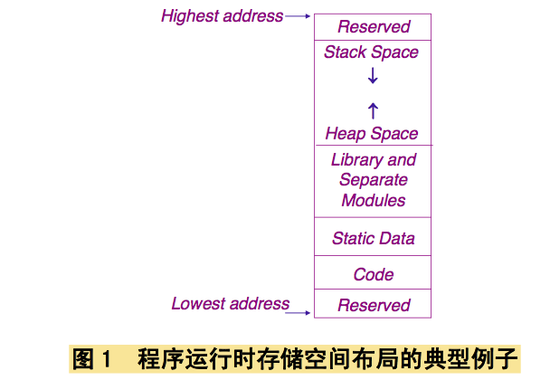
从上面一节我们知道,数据区可以分为静态数据区(全局数据区)和动态数据区,后者 又可分为堆区和栈区。之所以这样划分,是因为它们存放的数据和对应的管理方法的不同。 静态数据区、栈区和堆区的存储空间分配分别遵循三种不同的规则:静态存储分配(Static Memory Allocation)、栈式存储分配(Stack-based Allocation)和堆式存储分配(Heap-based Allocation)。后两种分配方式皆称为“动态存储分配”,因为这两种方式中存储空间并不是 在编译的时候静态分配好的,而是在运行时才进行的。
即为在编译期间为数据对象分配存储空间。这要求在编译期间就可确定数据对象的大小,同时还可以确定数据对象的数目。
然而,通常的做法是将 静态数据对象的存取地址对应到偶对(DataAreaStart,Offset)。Offset 是在编译时刻确定的 固定偏移量,而 DataAreaStart 则可以推迟到链接或运行时刻才确定。有时,DataAreaStart 的地址也可以装入某个基地址寄存器 Register,此时数据对象的存取地址对应到偶对 (Register,Offset),即所谓的寄存器偏址寻址方式。
它将数据对象的运行时存储 按照栈的方式来管理,常用于有效实现可动态嵌套的程序结构,如过程、函数以及嵌套程序 块(分程序)等。
与静态存储分配方式不同,栈式存储分配是动态的,也就是说必须是运行的时候才能确 定数据对象的存储分配结果。
在过程/函数的实现中,参与栈式存储分配的存储单元是活动记录(activation record)。 运行时每当进入一个过程/函数,就在栈顶为该过程/函数分配存放活动记录的数据空间。当 一个过程/函数工作完毕返回时,它在栈顶的活动记录数据空间也随即释放。
当数据对象的生存期与创建它的过程/函数的执行期无关时,例如某些数据对象可能在 该过程/函数结束之后仍然长期存在,就不适合进行栈式存储分配。一种灵活但是较昂贵的 存储分配方法是堆式存储分配。 在堆式存储分配中,可以在任意时刻以任意次序从数据段 的堆区分配和释放数据对象的运行时存储空间。通常,分配和释放数据对象的操作是应用程 序通过向操作系统提出申请来实现的,因此要占用相当的时间。
过程活动记录是指运行栈上的栈帧(frame),它在函数/过程调用时被创建,在函数/过 程运行过程中被访问和修改,在函数/过程返回时被撤销。该栈帧包含局部变量,函数实参, 临时值(用于表达式计算的中间单元)等数据信息以及必要的控制信息。
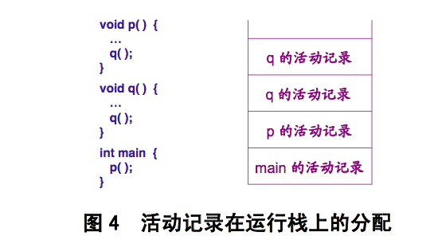
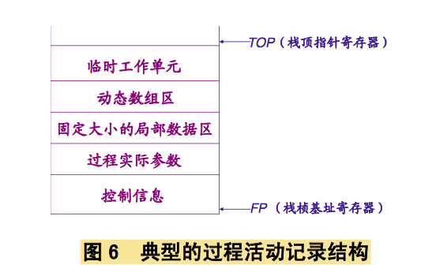
某些语言允许嵌套的过程/函数定义,这种情况下需要解决的一个重 要问题就是非局部量的访问。
在嵌套的过程定 义中,内层定义的过程体内可以访问包含它的外层过程中的数据对象。
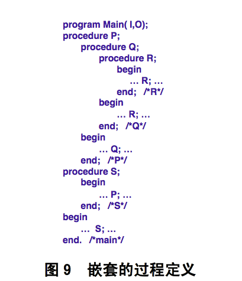
比如,在 R 的过程体 内可以访问过程 Q、过程 P 以及主程序 Main 所定义的数据对象。更确切地说,在过程 R 被 激活时,R 过程体内部可以访问过程 Q 最新一次被调用的活动记录中所保存的局部数据对 象,同样也可以访问过程 P 最新一次被调用的活动记录中所保存的局部数据对象,以及可以 访问主程序 Main 的活动记录中所保存的全局数据对象(假设全局数据对象也存放在栈区, 此时 Main 的活动记录总存在且是唯一的)。
Display 表记录各嵌套层当前过程的活动记录在运行栈上的起始位置(基地址)。若当前 激活过程的层次为 K(主程序的层次设为 0),则对应的 Display 表含有 K+1 个单元,依次 存放着现行层,直接外层,... ,直至最外层的每一过程的最新活动记录的基地址。嵌套作 用域规则可以确保每一时刻 Display 表内容的唯一性。
一种极端的方法是把整个 Display 表存入活动记录。若过程为第 n 层,则需要 保存 D[0]~D[n]。一个过程(处于第 n 层)被调用时,从调用过程的 Display 表中自下向上 抄录 n 个 FP 值,再加上本层的 FP 值。
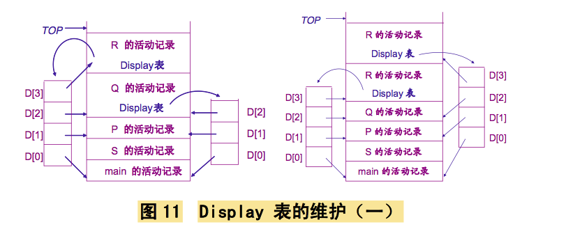
可以采用的另一种方法是只在活动记录保存 的一个 Display 表项,而在静态存储区或专用寄存器中维护一个全局 Display 表。如果一个 处于第 n 层的过程被调用,则只需要在该过程的活动记录中保存 D[n]先前的值;如果 D[n] 先前没有定义,那么我们用“_”代替。
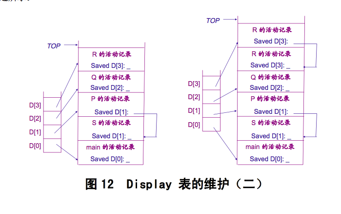
Display 表的方法要用到多个存储单元或多个寄存器,但有时并不情愿这样做。一种可 选的方法是采用静态链(static link),也称访问链(access link),即在所有活动记录都增加 一个域,指向定义该过程的直接外过程(或主程序)运行时最新的活动记录(的基址)。
与静态链对应的另一个概念是动态链(dynamic link),也称控制链(control link)。在过 程返回时,当前活动记录要被撤销,为回卷(unwind)到调用过程的活动记录(恢复 FP), 我们需要在被调用过程的活动记录中有这样一个域,即动态链,指向该调用过程的活动记录 (的基址)。
trivial
基本块(Basic Block)是指程序中一个顺序执行的语句序列,其中只有一个入口语句和一 个出口语句。执行时只能从其入口语句进入,从其出口语句退出。
流图以基本块集为结点集的有向图;第一个结点为含有程 序第一条语句的基本块,称为首结点;从基本块 i 到基本块 j 之间存在有向边,记作(i→j), 当且仅当：
对任意两个结点 m 和 n 而言,如果从流图的首结点出发,到达 n 的任一通 路都要经过 m,则称 m 是 n 的支配结点(dominator),记为 m DOM n。根据这个定义, 对流图中任意结点 a,一定有 a DOM a 以及 n0 DOM a。
假设 n->d 是流图中的一条有向边,如果 d DOM n 则称 n->d 是流图中的一条回边(back edge)。、
如果已知有向边n->d是回边,那么就可以求出包含该回边的自然循环(natural loop),简 称循环。该循环就是由结点 d、结点 n 以及有通路到达 n 而该通路不经过 d 的所有结点组成, 并且 d 是该循环的惟一入口结点。同时,因 d 是 n 的支配结点,所以 d 必可达该循环中任意 结点。
数据流方程用于描述流入和流出某程序单元或程序中不同点之间的数据流信息之间的联系。
对变量 A 的定值(definition)是指一条(TAC)语句赋值或可能赋值给 A。最普通的定值是对 A 的赋值或读值到 A 的语句,该语句的位置称作 A 的定值点。
变量 A 的定值点 d 到达某点 p,是指如果有路径从紧跟 d 的点到达 p,并且在这条路径 上 d 未被“杀死”,即该变量未被重新被定值。几个集合：
他们满足：out[B] = gen[B] U (in[B] - kill[B])。in[B] = U (out[b]), b in Precede[B]。
gen[B]和 kill[B] 是每个基本块 B 的固有属性,均可直接从基本块本身给出。in和out的求值算法如下：
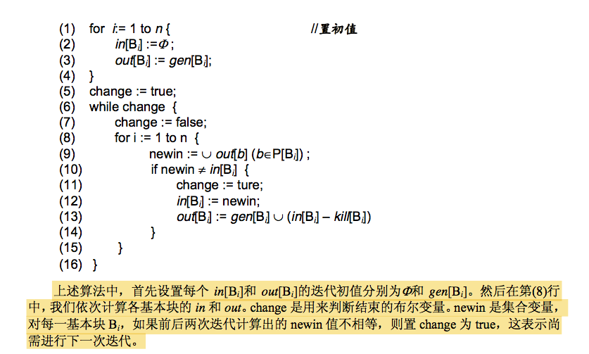
可以按下述规则求出到达基块 B 中某点 p 的任一变量 A 的所有定值点:
对程序中的某变量 A 和某点 p 而言,如果存在一条从 p 开始的通路,其中引用了 A 在点 p 的值,则称 A 在点 p 是活跃的。否则称 A 在点 p 是死亡的。定义：
满足：LiveIn[B] = LiveUse[B] U (LiveOut[B] - Def[B]) 与 LiveOut[B] = U (LiveIn[b]) b ∈ S[B]。
LiveUse[B]和 Def[B]是每个基本块 B 的固有属性,均可直接从基本块本身给出。这样,通 过活跃变量数据流方程,就可求解出所有的 LiveIn[B]和 LiveOut[B]。求解的算法：
!(a)[pics/20.png]
假设在程序中某点 u 引用了变量 A 的值,则把能到达 u 的 A 的所有定值点的全体,称为 A 在引用点 u 的引用-定值链(Use-Definition Chaining),简称 UD 链。
假设在程序中某点 p 定义了变量 A 的值,从 p 存在一条到达 A 的某个引用点 s 的路径,且 该路径上不存在 A 的其他定值点,则把所有此类引用点 s 的全体称为 A 在定值点 p 的定值-引 用链(Definition-Use Chaining),简称 DU 链。
活跃变量数据流方程的解 LiveOut[B]所给出的信息是:离开基本块 B 时,哪些变量的值在 B 的后继中还会被引用。如果 LiveOut[B]不仅给出上述信息,而且还同时给出它们在 B 的后继 中哪些点会被引用,那么就可直接应用这种信息来计算 B 中任一变量 A 在定值点 u 的 DU 链。
这时,只要对B中p后面部分进行扫描：
所以问题归结为如何计算出带有上述引用点信息的 LiveOut[B]。
为此,我们需要把活跃变量数据流方程 11-5 和 11-6 中的 LiveUse 和 Def 代表的信息进行 如下扩充:
窥孔优化是指在语句/指令序列上滑动一个包含几条语句/指令的窗口(称为窥孔),发现其 中不够优化的语句/指令序列,用一段更有效的序列来替代它,使整个代码得到改进。以下我们 举例说明几种常见的窥孔优化。
局部优化指的是在一个基块范围内进行的优化。常见的局部优化如:常量传播,常量合并,删除公共子表达式,复写传播,删除无用赋值,代数化简,等等。
DAG图见notes。
循环不变量代码外提的一个充分条件：
一个循环不变运量代码外提的算法: 1. 为所要处理的循环为建立用于代码外提的前置结点。 2. 查看当前循环中各基本块的每条 TAC 语句,如果发现某个循环不变量,并且该循环 不变量符合上述代码外提的充分条件,那么就将它插入到前置结点的尾部,即作为前置结点的 最末一条语句,并将该语句从当前循环中删除。 3. 重复以上第(2)步的工作,直至当前循环中(不包括前置结点)已不存在任何符合 外提充分条件的循环不变量为止。
见notes。
目标代码生成技术的核心问题主要包括指令选择(instruction selection)、寄存器分配(register allocation)与指令调度(code scheduling)。
所谓指令选择,就是为每条中间语言语句选择恰当的目标机指令或指令序列。这里,中间 语言语句是泛指中间表示的一个独立的操作,如在三地址码中指一条 TAC 语句,而在树形中间 表示中则指其结点所代表的一个独立操作。
寄存器分配的原则是充分、高效地使用寄存器。一方面,应尽量让变量的值或计算结果保 留在寄存器中。另一方面,不再被引用的变量所占用的寄存器应尽早释放,以提高寄存器的利 用率。选择最优的寄存器分配方案是困难的。
寄存器分以下几类：
指令调度是指对指令的执行顺序进行适当的调整,从而使得整个程序得到优化的执行效果。 指令调度对于现代计算机系统结构的高效使用是十分重要的环节,比如对于具有流水线的体系 结构,指令调度阶段往往是必需的。
参考notes29页。
参考notes32页。
Ershov数。
参考notes34页。